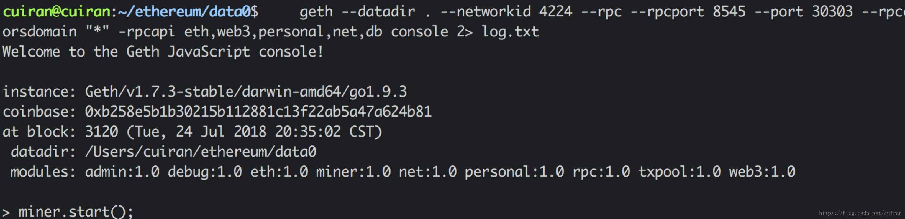
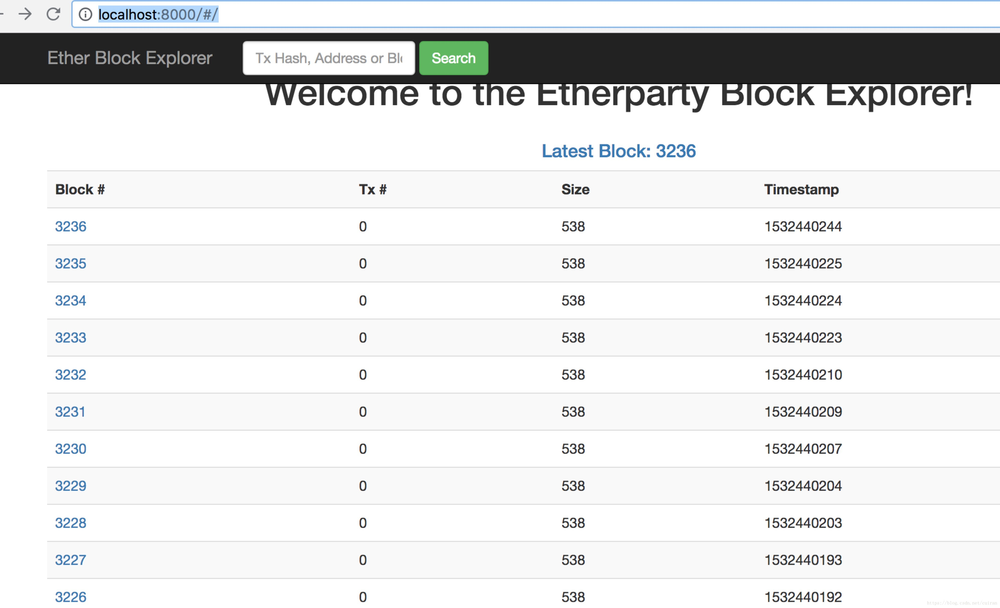
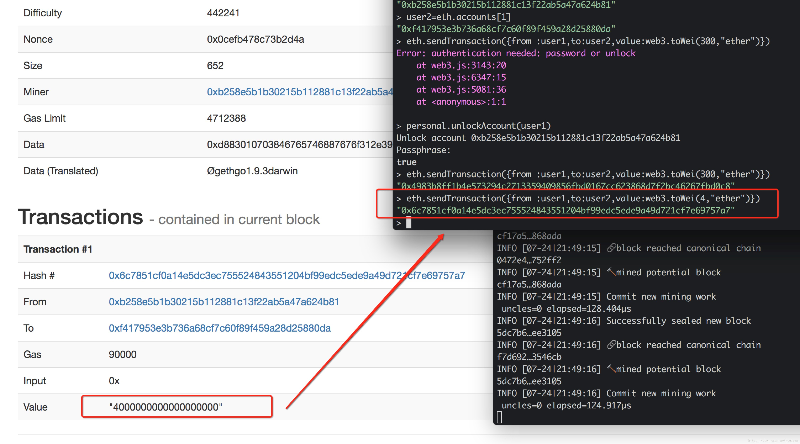

1. 搭建以太坊区块链浏览器¶
经过前面文章介绍，已经搭建以太坊的区块链环境，但是没有一个界面能查看到区块链的块数等信息，不是很直观，本篇搭建以太坊区块链浏览器。
1.1. 下载区块链浏览器代码¶
cuiran@cuiran:~/ethereum$ git clone https://github.com/etherparty/explorer
Cloning into 'explorer'...
remote: Counting objects: 269, done.
remote: Total 269 (delta 0), reused 0 (delta 0), pack-reused 269
Receiving objects: 100% (269/269), 58.84 KiB | 43.00 KiB/s, done.
Resolving deltas: 100% (139/139), done.
Checking connectivity... done.
默认配置的url是http://localhost:8545 如果rpc端口有改动需要手动去更改一下目录中的package.json文件
1.2. 下载bower工具¶
执行如下命令即可
npm install -g bower -y
bower init(有提示可以不用管)
bower install --allow-root
bower install angular --save-dev --allow-root
1.3. 启动以太坊节点¶
执行命令
geth --datadir . --networkid 4224 --rpc --rpcport 8545 --port 30303 --rpccorsdomain "*" -rpcapi eth,web3,personal,net,db console 2> log.txt
如图所示：

1.5. 访问区块链浏览器¶
访问地址:http://localhost:8000/ 这个时候会加载很慢，是因为js中使用了ajax.googleapis.com 只要把所有JS中的ajax.googleapis.com替换成ajax.lug.ustc.edu.cn即可正常使用。 下面就是访问的效果图

然后可以做一笔交易 ，可以进行查询 如图所示：
